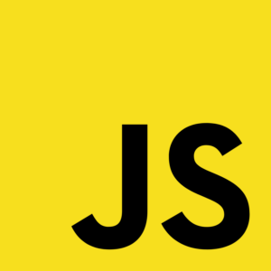

I was developing the official mobile application for the 8. Finnish Scout Jamboree Kajo
2022. The app Kajo Lux was a participant's tool for day-to-day camp life.
Photo credits: Toivo Laiho / Suomen Partiolaiset
I built a TKI.fi website with WordPress
Elementor. The website presents research, development and innovation solutions of the
Finnish Universities of Applied Sciences.
Photo credits: BoliviaInteligente / Unsplash

Most of my coding experience is in JavaScript – I have used it in my own projects, at
school and in
two work projects.
Photo credits: Florian Olivo / Unsplash
I have been studying Java at school. For example, I have made a board game site with Spring
Boot and Thymeleaf as a final project for the Back End Programming course.
Photo credits: BoliviaInteligente / Unsplash
I have used a bit of C# and Unity game engine. My dream is to make my own indie game in the
future.

Curious about my coding projects? Here's my GitHub.
Photo credits: BoliviaInteligente / Unsplash
I am the founder and I was the first leader of Club Tupa - a geek student club. The club is
today 5 years old and the longest running student club in Haaga-Helia UAS.
Photo credits: BoliviaInteligente / Unsplash
Outside school, I am deepening my understanding of web development and user interface
design.
Besides coding, I am also passionate about comics. You can follow my comics on Instagram
@bobdthewiz.
Photo credits: BoliviaInteligente / Unsplash